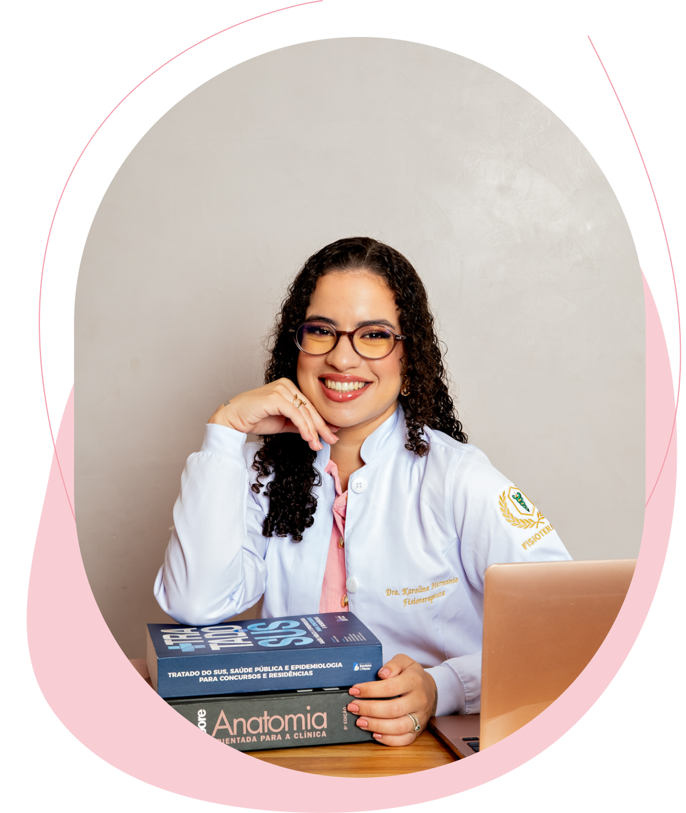
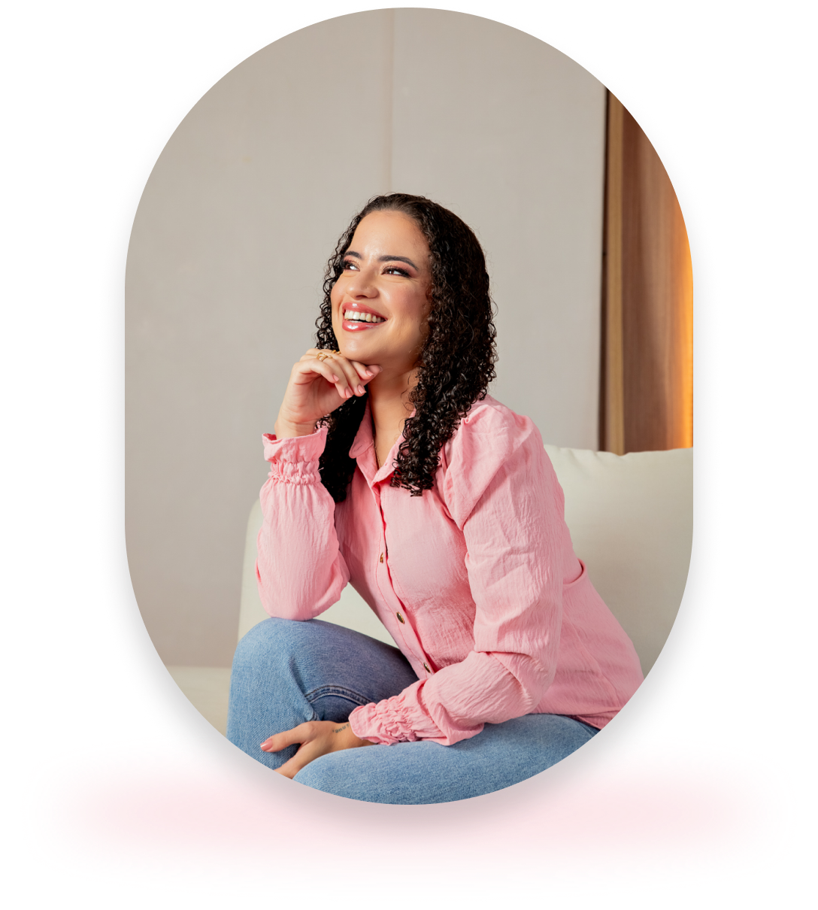

Atendimento fisioterapêutico especializado com
foco em neuroplasticidade e desenvolvimento funcional.
Ciência, sensibilidade e acolhimento no conforto do seu lar.


Sou a Karoline Hermínio, fisioterapeuta e pós-graduanda
em Psicomotricidade. Acredito que o processo de
reabilitação é uma jornada contínua, construída com
dedicação, ciência e esperança. O meu maior propósito é
devolver liberdade, independência e funcionalidade à sua
rotina, respeitando a sua individualidade através de um
cuidado verdadeiramente humanizado.
Karoline Hermínio
Fisioterapeuta • CREFITO: 12345